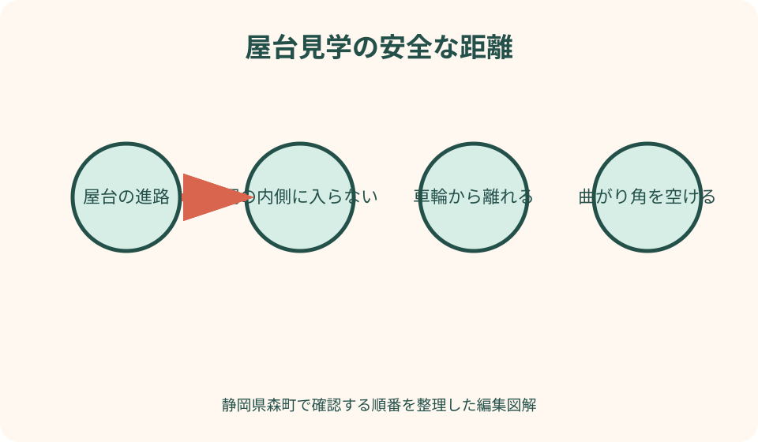
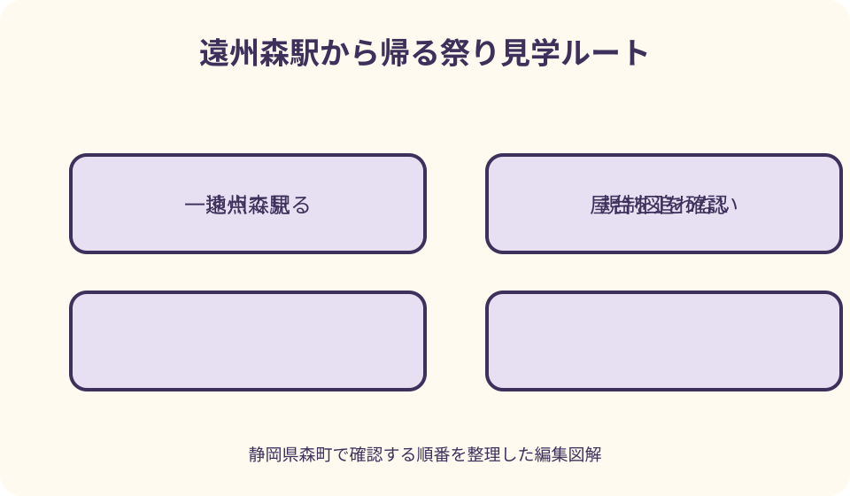

伝統行事・秋祭り・見学｜最終確認 2026-08-10
静岡県森町・森のまつり見学ガイド｜屋台・交通規制・帰路の考え方
森のまつりは、町が『町民にとって最も大事な行事』と紹介する地域の祭礼です。観客席へ座って進行表を見るだけの催しではなく、屋台、祭礼関係者、住民、歩行者が町なかで動きます。見学者は当年の運行と交通規制を確認し、屋台へ近づくことより地域の進行を妨げず帰ることを優先します。

編集イラスト森のまつりは地域行事として見る
森町公式は森のまつりを屋台が曳き廻される、町民にとって重要な行事と説明しています。来訪者向けに設営されたフェスではなく、地域の信仰と参加によって進む祭礼だと理解します。
観光協会の三島神社案内には、舞の奉納、屋台の曳き廻し、練りが紹介されています。ただし紹介文は当年の時刻表ではありません。実施内容と区域は訪問年の告知へ戻ります。
町公式の歴史解説には、森の町の秋の屋台祭りとして記述があります。由来を一つの物語へ単純化せず、現地の神社、各町の案内、文化資料に示された範囲で学びます。
見学者は祭りを『消費する側』ではありません。屋台を曳く人、楽器や舞を奉納する人、沿道で迎える住民の場所へ入らせてもらう立場です。
地元の知人がいない場合も、勝手に関係者区域へ入らず、一般見学者として表示と係員に従います。衣装や掛け声をまねて行列へ参加しません。
当年日程と屋台運行を確定する
観光協会の年間行事にある例年の時期は、旅行候補を探す入口です。曜日の並びや開催日を毎年同じと決めず、当年の主催者告知が公開されてから予定を確定します。
当年資料では、祭礼全体の日程だけでなく、屋台が動く時間帯、奉納、集合、主要地点を見ます。三日間と紹介される祭りでも、毎日同じ場所で同じ内容ではありません。
町公式は屋台の台数を紹介していますが、当年に全屋台が同時に同じ地点へ集まるという意味ではありません。参加、巡行、集合はその年の運行表で確認します。
屋台名や町名に慣れていない人は、運行表と地図を並べます。文字の順番だけで追いかけず、どの道路をいつ通る可能性があるかを地図上で理解します。
一番見たい場面を一つ選びます。奉納、屋台の行き交い、町なかの巡行をすべて追うと、交通規制内で長距離を歩き、帰路を失いやすくなります。
産業祭・お祭り広場と混同しない
森町には産業祭『もりもり2万人まつり』もあります。町公式の産業イベント一覧に掲載される展示・販売中心の催事で、森のまつりとは開催目的も案内ページも異なります。
森町文化会館には『お祭り広場』という屋外空間があります。名称に祭りとあっても、森のまつり全体の固定会場を意味するとは限りません。
検索すると産業祭の駐車地図や文化会館の施設案内が見つかる場合があります。それを森のまつりの指定駐車場、観覧会場、交通規制へ転用しません。
当年チラシのタイトルを読み、森のまつり、産業祭、森の石松まつりを区別します。『森』『まつり』が共通しても、主催者、会場、参加方法は別です。
お祭り広場を待合場所にする場合も、祭礼当日の利用可否と規制内外を確認します。普段利用できる施設が当日も自由な休憩所とは限りません。
屋台の曳き廻しを安全な距離で見る
屋台は大きく重く、曲がる、止まる、動き出す場面があります。進行方向の正面、車輪の脇、綱の内側、曲がり角に立たないことが基本です。
屋台が近づいたら写真の構図を探す前に、係員、曳き手、綱、車輪、退避できる場所を確認します。後ろへ下がるとき別の観客や段差へぶつからない位置を取ります。
曳き手の掛け声や練りが盛り上がっても、一般見学者が列へ加わってよい合図ではありません。招かれたように見えても、責任者の明確な案内がなければ外から見ます。
道路沿いの玄関、店舗入口、私有地は空いて見えても観覧場所ではありません。住民の出入りを塞がず、敷地へ一歩入って撮影しません。
屋台同士が近づく場面では人の密度も上がります。中心へ向かうより外周へ動き、見えなければ音と雰囲気を受け取り、その場を離れます。
見学マナーは地域の進行を基準にする
神社で奉納が行われる場合、参拝者と祭礼関係者の動線を優先します。正面や参道中央で立ち止まらず、帽子、飲食、会話の扱いは境内の指示へ従います。
掛け声に合わせて大声を出す、酒を勧める、衣装へ触る行為は、地域の人同士の振る舞いを外からまねることになります。見学者は拍手や静かな観覧にとどめます。
屋台や提灯、装飾へ手を触れません。細部を見たいときも、係員が管理する範囲の外から観察します。
ごみ箱や仮設トイレの場所は当年案内で確認します。店で買った物の包装を沿道へ置かず、持ち帰れる袋を用意します。
住宅地では夜間の話し声、スマートフォンの音、敷地前での長時間滞在を控えます。祭りの音があるから観客の音も無制限になるわけではありません。

撮影は動く被写体より安全を優先
屋台を画面で追うと周囲が見えなくなります。撮る場所を決めたら足を止め、屋台が通過するまで道路へ踏み出さず、移動時はカメラを下げます。
広角で近づく代わりに、歩行者区域の外から望遠を使う方が安全な場面があります。ただし三脚が通路を塞ぐ場合は、手持ちにするか撮影をやめます。
フラッシュや強い動画照明は、曳き手、演者、運転者、周囲の観客へ影響します。夜間も主催者が認める範囲の環境光で撮ります。
子どもの参加者、観客の顔、住宅、車両番号を公開する場合は注意が必要です。撮影できたことと、個人が特定できる形で投稿できることを同じにしません。
奉納舞や祭囃子の録音・配信は、権利と祭礼上の配慮があります。長時間配信、商用撮影、ドローンは事前に主催者へ許可を確認します。
交通規制図を出発前に読んでおく
森のまつりでは町なかの道路が祭礼の舞台になります。通常日のカーナビ経路ではなく、当年の交通規制図を優先します。
図では規制区間だけでなく、規制の開始・解除、車種、一方通行、通行止め、歩行者横断可能な地点を読みます。色だけで判断せず凡例を確認します。
宿泊、食事、送迎先が規制区域内にある場合、予約があっても車で到達できるとは限りません。施設へ当日の入退場方法を事前に尋ねます。
規制前に入れば区域内へ駐車できるという考えは危険です。退出できない、屋台の経路になる、駐車禁止が適用される可能性があります。指定駐車以外を使いません。
規制解除直後も屋台、片付け、人流が残ることがあります。表示と警察・係員の指示が変わるまで、車道へ出たり送迎車を呼び込んだりしません。
駐車は当年の指定だけを使う
祭り専用または臨時駐車の有無は、当年資料で確認します。文化会館、役場、学校、店舗の駐車場を過去に使えたという情報だけで目的地に設定しません。
指定駐車場があっても台数には限りがあります。満車時の第二候補、利用可能時間、規制区域までの徒歩を出発前に確認します。
路上で同乗者を降ろす行為は、屋台、歩行者、対向車の流れを乱します。送迎場所が公式に示されなければ、全員で指定駐車から歩きます。
身体的な配慮が必要な人は、優先駐車や乗降方法を主催者へ早めに相談します。当日に警備員へ頼めば規制内へ入れると考えません。
帰りは駐車場の閉鎖時刻と出庫方向を確認します。祭りの終盤まで見てから遠い車へ戻る場合、暗い徒歩経路と混雑時間を含めます。
天浜線では遠州森駅への帰りを先に決める
車の規制を避ける手段として天浜線を検討できます。ただし祭りの日だから臨時列車や増結があると推測せず、天浜線公式の訪問日ダイヤを確認します。
遠州森駅から見学地点までの道は、屋台運行と人流で通常日より時間がかかる場合があります。当年地図で規制区域と駅の位置を重ねます。
到着時に帰りの列車を二つ選び、早い方へ戻る時刻を決めます。最終列車だけを選ぶと、混雑や迂回を吸収できません。
駅へ戻る途中で屋台に出会ったら、列車を優先します。屋台の進路を横断して近道せず、係員の案内で迂回し、間に合わなければ次の安全な便へ切り替えます。
ICカード、切符、運賃精算、駅設備は天浜線公式で確認します。帰りのホームや方向を到着時に見ておけば、夜の混雑で迷いにくくなります。
子連れは屋台を追わず一地点で見る
子どもは屋台、提灯、音へ近づきたくなります。手をつなぐ、抱っこひもを使う、保護者の間に立たせるなど、年齢に合う方法で進路から距離を取ります。
ベビーカーは人混み、段差、規制柵で動けなくなることがあります。利用可能な区域、預け場所、授乳・おむつ替え、休憩所を当年案内または施設へ確認します。
迷子対策として、集合場所を大人向けの店名だけで決めず、係員がいる案内所など当日確認できる地点にします。子どもの服装と連絡先を保護者で共有します。
大きな祭囃子や掛け声を怖がる子もいます。耳を守る用品を準備し、泣いたら慣れさせようと屋台へ近づかず、静かな外周へ移ります。
食事、トイレ、眠気で崩れる前に帰ります。夜の提灯まで見ることを家族全員の必須にせず、昼の一場面だけで終える計画を基本にします。
雨天・強風・運行変更を確認する
雨天時に祭礼全体、屋台、奉納、練りが同じ判断になるとは限りません。何を実施し、何を中止・変更するかを当年の主催者発表で項目別に見ます。
中止判断の発表先と時点を、前日までに保存します。古いチラシだけで出発せず、当日の公式サイト、地域の告知、問合せ先から最新を確認します。
小雨実施でも、傘が人混みで視界を遮ります。レインウェアを使える場合は傘を畳み、傘先を子どもの顔や屋台の綱へ向けません。
強風では提灯、装飾、看板、傘が影響を受けます。主催者が運行を止めたら、再開を待って規制内に滞留せず、案内された場所へ移動します。
雨天中止なら、町なかへ行けば何か見られると考えません。地域の準備や片付けを妨げないよう、営業を確認した屋内施設へ変更するか訪問を取りやめます。

夜の帰路と飲酒を先に管理する
夜は提灯が魅力でも、足元、規制柵、側溝、屋台の動きが見えにくくなります。スマートフォン画面を見ながら歩かず、明るい外周で現在地を確認します。
帰りの駅・駐車場への経路は、屋台の通過で一時的に横断できない場合があります。予備の迂回と、列車または駐車場閉鎖までの余裕を持ちます。
飲酒する人は運転しません。運転者を決めても、祭りの付き合いで勧められる可能性を考え、車を使わず鉄道や宿泊に切り替える判断も必要です。
タクシーを使う場合、規制区域内へ迎車できるとは限りません。事業者へ乗車可能地点、予約、混雑時の見込みを確認し、屋台進路へ停車させません。
疲労や冷えが強ければ、見たい屋台が来る前でも帰ります。最後の場面を撮ることより、地域の道路を安全に離れることが見学の完了条件です。
良い点
森のまつりは、屋台、祭囃子、奉納、町なかの人の動きが一体となる地域行事です。固定ステージだけでは分からない森町のつながりを見られます。
町公式には祭りの文化的な説明、屋台数、地域にとっての重要性があり、観光協会には神社と年間行事の入口があります。背景と訪問時期を分けて調べられます。
遠州森駅を起点にすれば、車の交通規制を避ける選択肢があります。訪問日の鉄道と徒歩動線を確認すれば、町なかを歩いて見る祭りの性格にも合います。
見学者向けの見どころだけでなく、地域の人が主体であること自体が価値です。距離を守って見ることで、観光向けに作り替えられていない祭礼の時間へ触れられます。
注文したい点
当年の公式入口に、日程、屋台運行、奉納、交通規制、駐車、鉄道、雨天判断をまとめ、過去年度には終了表示と最新回へのリンクを付けてほしいです。
交通規制図は、規制区間だけでなく一般見学者が安全に待てる区域、横断地点、トイレ、案内所、子連れ休憩場所を同じ凡例で示すと実用的です。
屋台ごとの運行表には、観客が追走しないこと、綱・車輪・曲がり角から離れることを多言語と図で添えると、初訪問でも判断できます。
雨天時は『開催』の一語ではなく、屋台、舞、練り、出店、交通規制を項目別に更新してほしいところです。部分変更を全実施と誤認せずに済みます。
天浜線公式、主催者、町、警察の情報へ相互リンクがあれば、検索で産業祭や北海道の森町を開く混乱を減らせます。
代案・結論
当年の運行・規制情報が公開されていなければ、過去資料で駐車位置や屋台時刻を決めません。発表を待つか、祭り以外の森町訪問へ変更します。
混雑したら屋台を追わず一地点、子どもが疲れたら昼で終了、雨なら公式判断に従って屋内または中止というように、問題ごとに予定を小さくします。
地域行事と観光の線引きは、見られる場所すべてへ入ることではなく、関係者の進行と住民生活を優先することです。写真が撮れない場面も受け入れます。
結論として、当年日程、屋台運行、交通規制、往復交通、雨天発表をそろえ、屋台から安全な距離を保ち、帰りの列車または駐車場へ早めに戻ります。
大石の視点
森のまつりを便利な観光商品として説明しすぎると、地域の人が守る行事という核心が消えます。見学者が主役ではないことを、注意書きではなく記事全体の順序で示したいです。
私は現地で屋台を曳いた、練りへ参加したといった体験を作りません。町と観光協会が示す事実から、外部の見学者に必要な距離と確認方法を組み立てます。
由来も一文へ決めつけません。町の歴史資料、神社、各町が伝える説明を読み、複数の担い手がいる祭りを単純な起源物語に縮めないようにします。
最も良い見学位置は、屋台へ最も近い場所とは限りません。曳き手の声が聞こえ、子どもを守れ、住民の出入口を塞がず、帰路へ動ける外側こそ実用的です。
最後まで残らず帰るのも祭りへの敬意です。片付けと住民の夜が始まる前に、ごみと自分の荷物を持ち、交通規制へ負担を残さず町を離れるところまでを見学と考えます。
公式情報・確認先
掲載内容は次の一次情報を基礎に整理しました。営業、料金、催し、交通は変わるため、出発前または手続き前にリンク先で最新情報を確認してください。